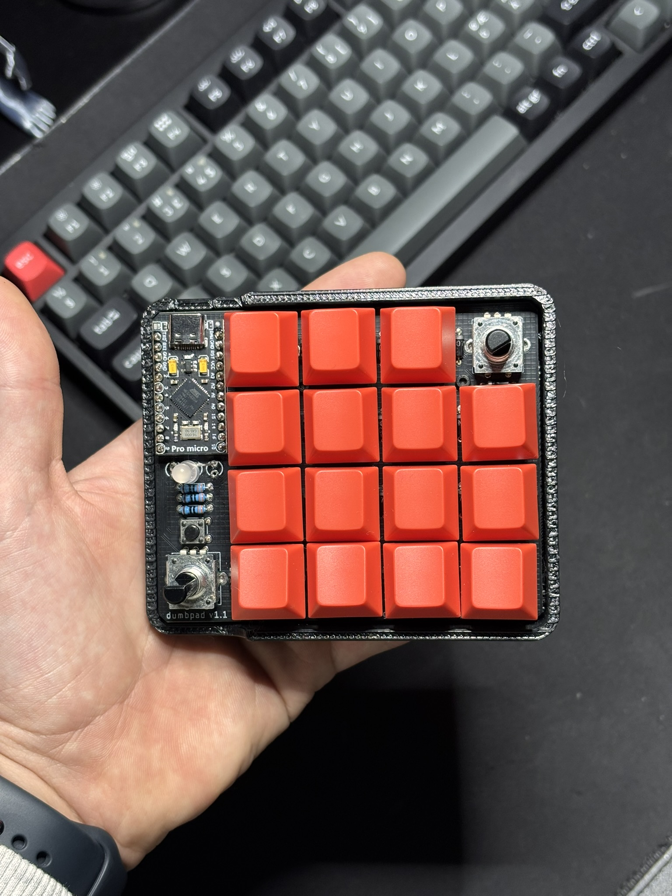

Dumbpad Macropad
3D printing · Soldering · QMK firmware in C
A 3D-printed, hand-wired macropad based on the open-source dumbpad v1.x dual-encoder design, built without a PCB around a Pro Micro (ATmega32u4) running QMK firmware.
The build combined mechanical assembly, embedded firmware development and basic electronics: soldering the switch matrix and status LEDs (with current-limiting resistors), wiring two rotary encoders, and writing a custom QMK keymap in C.

Firmware
Custom QMK keymap and firmware logic:
- Numpad layout on the key matrix
- Encoder 1 mapped to system volume
- Encoder 2 cycles an RGB indicator LED through on/off color combinations via GPIO
What I learned
- 3D printing the case and enclosure
- Hands-on soldering
- Embedded C with QMK: the build system, GPIO control and encoder handling
Next steps
Moving from finished designed pcb to a custom-designed PCB, to make the build more custom and open the door to more complex circuitry such as addressable RGB and additional inputs.